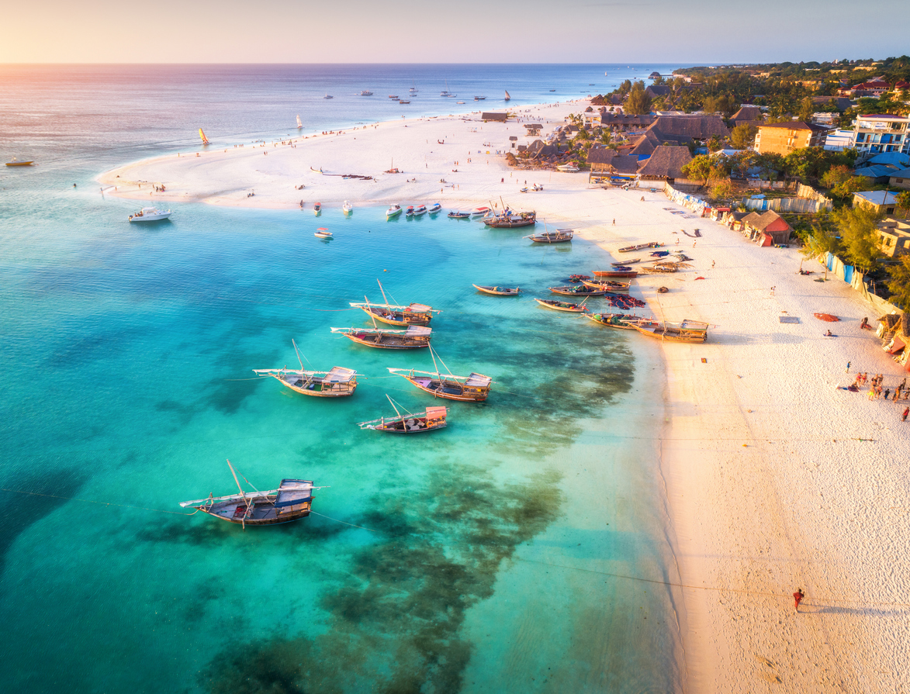
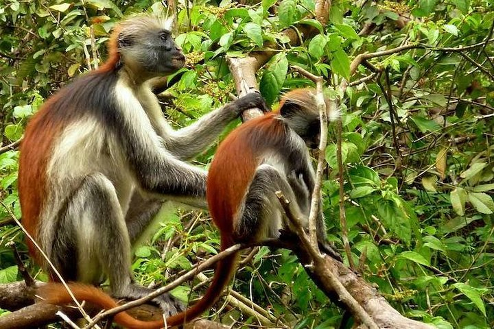

|
Zanzibar is an insular autonomous region of Tanzania. It is composed of the Zanzibar Archipelago in the Indian Ocean, 25–50 kilometres (16–31 mi) off the coast of the mainland, and consists of many small islands and two large ones: Unguja (the main island, referred to informally as Zanzibar) and Pemba Island. The capital is Zanzibar City, located on the island of Unguja. Its historic centre is Stone Town as World Heritage Site. Zanzibar's main industries are spices, raffia, and tourism. In particular, the islands produce cloves, nutmeg, cinnamon, and black pepper. For this reason, the Zanzibar Archipelago, together with Tanzania's Mafia Island, are sometimes referred to locally as the "Spice Islands". Tourism in Zanzibar is a more recent activity, driven by government promotion that caused an increase from 19,000 tourists in 1985, to 376,000 in 2016. The islands are accessible via 5 ports and the Abeid Amani Karume International Airport, which can serve up to 1.5 million passengers per year. Zanzibar's marine ecosystem is an important part of the economy for fishing and algaculture and contains important marine ecosystems that act as fish nurseries for Indian Ocean fish populations. Moreover, the land ecosystem is the home of the endemic Zanzibar red colobus, the Zanzibar servaline genet, and the extinct or rare Zanzibar leopard. Pressure from the tourist industry and fishing as well as larger threats such as sea level rise caused by climate change are creating increasing environmental concerns throughout the region. |
  |